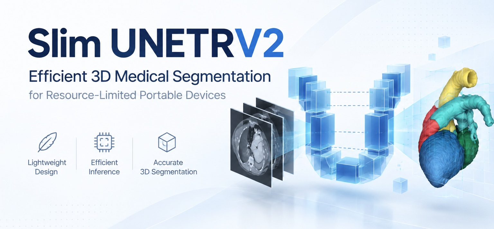

Medical Image Analysis
Segmentation, multimodal imaging, endoscopy, ultrasound, and 3D medical vision for clinically meaningful analysis.
Dr. Yan Pang, IEEE Senior Member, is an Associate Professor at the Shenzhen Institutes of Advanced Technology, Chinese Academy of Sciences. His research focuses on the development of efficient and trustworthy artificial intelligence methods and systems for scientific inquiry and real-world applications, with particular emphasis on translating advanced models into practical, deployable technologies.

Five core directions spanning intelligent healthcare, scalable visual intelligence, efficient deployment, and secure computational systems.
Segmentation, multimodal imaging, endoscopy, ultrasound, and 3D medical vision for clinically meaningful analysis.
Perception, navigation, and decision intelligence for surgical robotic systems operating in complex clinical environments.
Scalable visual representation learning and transferable models for complex real-world vision tasks.
Compact AI models designed for low-latency, resource-aware inference on edge AI hardware and dedicated chips.
Graph-based learning and reasoning for smart-contract vulnerability analysis, fraud detection, and account security.
Selected work connecting medical image analysis with efficient AI deployment.

Code has been released with the publication.
Project →Paper 555 from the group was presented in Strasbourg, France.
Conference →Lightweight endoscopic OCT segmentation with released code.
Project →